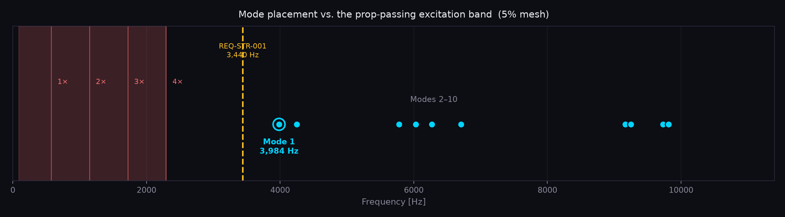
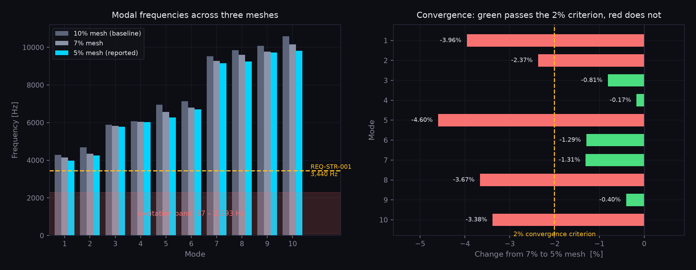

Structural & Thermal Qualification · Independent Research In Progress Rev C
Virtual environmental qualification of a machined avionics enclosure for a 7 in class long-range multirotor. Every requirement traces to a manufacturer-published limit, a military standard, or a platform-derived excitation condition. Verification is by analysis only — no physical test article is produced.

Closed assembly. 93 × 63 × 33 mm body, 79 mm across the mounting tabs. Six-fastener lid, four mounting tabs, and a side cable penetration for the external GPS and receiver harness.

Lid removed. Standoffs on the 30.5 × 30.5 mm stack pattern, and a divider rib separating the board stack from the bay holding the video transmitter and the upright 6S bulk capacitor.
Headline Results
First mode at 3,984 Hz against a 3,440 Hz requirement, clearing the fourth prop harmonic at maximum RPM by a factor of 1.74. No mode falls inside the 87–2,293 Hz band.
The sealed enclosure needs 9.2 times its external area to hold 40 °C at hover. REQ-THM-001 fails in all four evaluated cases.
Four structural, five thermal, and four mass and envelope — each traced to a datasheet limit, a published standard, or a platform-derived condition.
Flight controller, ESC, and video transmitter. The GPS and receiver sit outside the box and are excluded from the internal thermal model.
Each recorded with its justification and its direction of conservatism — including two that are explicitly non-conservative.
Moving the 7.9 W video transmitter outside drops the area requirement from 9.2× to 2.5×, which is achievable. This is what drives the next iteration.
Baseline selected by weighted trade study, scored against the parameters that drive enclosure design — dissipation, mass, envelope, and temperature limit — rather than flight performance.
| ID | Component | Part | Mass (g) | Footprint (mm) | Height (mm) | Diss. (W) | Location |
|---|---|---|---|---|---|---|---|
| C1 | Flight controller | Matek H743-SLIM | 7.0 | 36 × 36 | 5.0 | 2.00 | Internal |
| C2 | 4-in-1 ESC | Holybro Tekko32 F4 65A | 15.8 | 46 × 44 | 6.0 | 0.90 | Internal |
| C3 | Video transmitter | RushFPV Tank Ultimate | 12.0 | 37 × 24 | 6.7 | 7.90 | Internal |
| C4 | GPS / compass | Matek M10Q-5883 | 8.0 | 20 × 20 | 12.4 | 0.07 | External |
| C5 | RC receiver | Happymodel EP2 ELRS | 0.4 | 10 × 10 | 6.0 | 0.20 | External |
| C6 | Bulk capacitor | 35PK1000MEFCT810X20 | 2.75 | ⌀ 11.25 | 25.0 | negligible | Internal |
| Internal heat load (C1 + C2 + C3) | 10.80 | — | |||||
The ESC has no output BEC, so all 5 V loads draw from the flight controller's onboard regulator and the conversion losses dissipate on C1 — which is why its dissipation is booked at 2.00 W rather than its published 1.0 W static figure. The ESC's larger 46 × 44 mm outline, not the flight controller, sets the minimum internal footprint.
The propulsion system does not sit inside the enclosure. It is specified because it defines the vibration environment.
| Harmonic | At idle (2,600 RPM) | At max (17,200 RPM) |
|---|---|---|
| 1× | 87 Hz | 573 Hz |
| 2× | 173 Hz | 1,147 Hz |
| 3× | 260 Hz | 1,720 Hz |
| 4× | 347 Hz | 2,293 Hz |
| Case | Freestream | Ambient | Notes |
|---|---|---|---|
| Hover | ≈ 0 m/s (prop wash only) | 35 °C | Worst-case convection, lowest ESC load |
| Cruise | 18 m/s | 35 °C | Good convection, higher I²R loss |
The two cases trade against each other, so neither is binding a priori.
Thirteen requirements across structural, thermal, mass, and envelope. Each carries its source and its verification method.
| ID | Requirement | Source | Verification |
|---|---|---|---|
| REQ-STR-001 | First natural frequency of the loaded assembly shall exceed 3,440 Hz | §2, 1.5× separation | Modal FEA |
| REQ-STR-002 | No mode shall fall within 87 to 2,293 Hz | Excitation band | Modal FEA |
| REQ-STR-003 | Margin of safety under 3σ random vibration shall be positive against 6061-T6 yield | MIL-STD-810H | Miles' equation + static FEA |
| REQ-STR-004 | Mounting interface shall survive cumulative exposure without fatigue failure | 6061-T6 S-N data | Fatigue hand calc |
| ID | Requirement | Source | Verification |
|---|---|---|---|
| REQ-THM-001 | Internal air temperature shall not exceed 40 °C in any flight condition | C1 max ambient | Coupled CFD / thermal FEA |
| REQ-THM-002 | C1 component temperature shall not exceed 100 °C | C1 spec | Thermal FEA |
| REQ-THM-003 | C2 MOSFET temperature shall not exceed 150 °C | C2 spec | Thermal FEA |
| REQ-THM-004 | C3 case temperature shall not exceed 90 °C | C3 spec | Thermal FEA |
| REQ-THM-005 | C6 capacitor temperature shall not exceed its rating | C6 spec | Thermal FEA |
| ID | Requirement | Verification |
|---|---|---|
| REQ-MAS-001 | Enclosure mass shall not exceed the platform allocation | CAD mass properties |
| REQ-ENV-001 | Internal volume shall accommodate C1, C2, C3 and C6 with clearance | CAD |
| REQ-ENV-002 | Enclosure shall accept the 30.5 × 30.5 mm stack mounting pattern | CAD |
| REQ-ENV-003 | Enclosure shall provide a cable penetration for the external C4 and C5 harness | CAD |
MS = (Allowable / Predicted) − 1. What passes, what fails, and what is still open.
| Req ID | Condition | Predicted | Allowable | Margin | Status |
|---|---|---|---|---|---|
| REQ-STR-001 | Modal | 3,984 Hz | 3,440 Hz | +0.16 | PASS |
| REQ-STR-002 | Modal | f₁ = 3,984 Hz | 87–2,293 Hz | No mode in band | PASS |
| REQ-STR-003 | Random vibration | — | — | — | OPEN |
| REQ-STR-004 | Fatigue | — | — | — | OPEN |
| REQ-THM-001 | Hover, bare Al | 86.0 °C | 40 °C | −0.53 | FAIL |
| REQ-THM-001 | Hover, anodised | 69.4 °C | 40 °C | −0.42 | FAIL |
| REQ-THM-001 | Cruise, bare Al | 43.9 °C | 40 °C | −0.09 | FAIL |
| REQ-THM-001 | Cruise, anodised | 43.2 °C | 40 °C | −0.07 | FAIL |
| REQ-THM-002/3/4 | Component temperatures | — | 100 / 150 / 90 °C | — | OPEN |
| REQ-MAS-001 | Base mass | 96 g | — | — | OPEN |
Thermal predictions come from the preliminary lumped-parameter calculation, not FEA. They are surface temperatures and therefore optimistic — internal air will run hotter.
Ten modes extracted in Fusion 360 (Nastran), bonded contacts throughout, fixed on the four mounting tab underside faces.

Every mode clears the band. The four prop harmonics at maximum RPM span 87–2,293 Hz. The first mode sits at 3,984 Hz — above the 3,440 Hz requirement and clear of the fourth harmonic by a factor of 1.74.
| Mode | Freq | Shape |
|---|---|---|
| 1 | 3,984 Hz | Lid drumming, first bending. Centre antinode decaying to zero at the four corner bolts; base and internal stack essentially rigid. |
| 2 | 4,249 Hz | Second lid mode. Lid deforms, base floor does not participate. No significant motion of internal components. |
| 3 | 5,779 Hz | Board stack responds about the Y axis. VTX and capacitor stationary; no lid or floor bending. |
| 4 | 6,029 Hz | Small coupled lid and floor bending. Outer walls stationary; board stack bends about the X axis. |
| 5 | 6,272 Hz | Capacitor and partial VTX response. Lid deforms out of plane over the stack, opposite half deforms inward. |
| 6 | 6,706 Hz | Capacitor-side wall deforms inward with the VTX. Stack largely unaffected; lid and floor deform in opposition across the two halves. |
| 7 | 9,163 Hz | Capacitor deformation fully coupled into the adjacent wall. Stack bending present; lid and floor deform in an anti-phase diagonal pattern. |
| 8 | 9,250 Hz | Coupled lid and long-wall response. Single centre antinode on the lid; stack shows a diagonal pattern peaking at one ESC corner, with the capacitor near-stationary. |
| 9 | 9,730 Hz | Long-wall out-of-plane bending. Two lid antinodes either side of the cable penetration with a matching pair on the opposing wall; base floor and tabs nodal. |
| 10 | 9,813 Hz | Higher-order side-wall mode, three antinodes along the long wall. Lid bows upward while the stack bows downward beneath it; standoffs couple the two. |
Three meshes at 10%, 7%, and 5% element size. A shift below 2% is taken as converged — and the result is worth stating precisely rather than summarising as “converged”.

Five of ten modes fail the 2% criterion. Left, every mode across all three meshes against the excitation band and the 3,440 Hz requirement. Right, the change from the 7% to the 5% mesh — green passes, red does not.
| Mode | 10% (baseline) | 7% (refined) | Δ 10→7 | 5% (further refined) | Δ 7→5 |
|---|---|---|---|---|---|
| 1 | 4,286.5 | 4,147.9 | −3.23% | 3,983.7 | −3.96% |
| 2 | 4,690.0 | 4,352.5 | −7.20% | 4,249.4 | −2.37% |
| 3 | 5,882.3 | 5,826.4 | −0.95% | 5,779.2 | −0.81% |
| 4 | 6,071.6 | 6,038.9 | −0.54% | 6,028.6 | −0.17% |
| 5 | 6,955.8 | 6,574.2 | −5.49% | 6,271.9 | −4.60% |
| 6 | 7,130.9 | 6,793.3 | −4.73% | 6,705.6 | −1.29% |
| 7 | 9,520.8 | 9,284.6 | −2.48% | 9,163.3 | −1.31% |
| 8 | 9,847.4 | 9,601.5 | −2.50% | 9,249.5 | −3.67% |
| 9 | 10,081.1 | 9,769.5 | −3.09% | 9,730.2 | −0.40% |
| 10 | 10,591.3 | 10,156.3 | −4.11% | 9,812.7 | −3.38% |
A lumped-parameter hand calculation in Python, built deliberately before any FEA — to establish an expected answer to check the FEA against.
| Case | hconv | hrad | ΔT | Tsurface | Margin | Status |
|---|---|---|---|---|---|---|
| Hover, bare Al | 8.7 | 0.8 | 51.0 °C | 86.0 °C | −0.53 | FAIL |
| Hover, anodised | 8.0 | 6.3 | 34.4 °C | 69.4 °C | −0.42 | FAIL |
| Cruise, bare Al | 54.6 | 0.7 | 8.9 °C | 43.9 °C | −0.09 | FAIL |
| Cruise, anodised | 54.6 | 5.5 | 8.2 °C | 43.2 °C | −0.07 | FAIL |
h in W/m²·K. External area 0.0221 m². Cruise Reynolds number 93,095 — laminar, so the flat-plate laminar correlation is appropriate.
The sealed architecture fails REQ-THM-001 in every case. Hover is the binding condition: it has the worst heat rejection despite the lowest ESC load. Anodising helps materially at hover — radiation carries 6.3 of the 14.3 W/m²·K total against 0.8 for bare aluminium — which makes surface finish a first-order design variable rather than a detail. It is not close to enough.
Closing a 34 °C rise against a 5 °C allowable requires 9.2× the current external area. The obvious response is fins, so fins were sized rather than assumed:
| Approach | Area achieved | Area required | Mass added | Verdict |
|---|---|---|---|---|
| Densely finned long walls | 3.4× | 9.2× | +101 g | Insufficient |
| Relocate the 7.9 W VTX externally | — | 2.5× | −12 g | Achievable |
Every assumption made in place of a sourced value, recorded with its justification and its direction of conservatism — including the ones that do not favour the design.
| # | Assumption | Justification | Impact if wrong |
|---|---|---|---|
| A1 | C1 dissipation taken as 2.00 W | Published static power is 1.0 W; rounded up to bound BEC conversion losses | Over-predicts heat load by ~0.6 W. Conservative. |
| A2 | C2 dissipation taken as 0.90 W at hover | Conduction loss scales as I²·Rds(on) | Loss scales with the square of current — a 2× current error is a 4× dissipation error |
| A3 | Ambient temperature 35 °C | Hot-day condition for the intended operating environment | Directly offsets every predicted temperature |
| A4 | C1 40 °C limit read as max ambient | Distinct from the ~100 °C component rating; inside a sealed box the ambient limit governs | If it is a component limit, REQ-THM-001 is over-conservative |
| A5 | Standoffs modelled as aluminium | Stiffer than the nylon commonly used in FPV builds | Nylon would lower the board stack modes. NON-CONSERVATIVE. |
| A6 | All interfaces modelled as bonded | Represents fully preloaded bolted joints with no slip | Over-predicts assembly stiffness and therefore natural frequencies. NON-CONSERVATIVE for REQ-STR-001. |
| A7 | Components modelled as homogeneous solids | Correct mass and envelope; FEA needs mass distribution, not board layout | Local board stiffness unrepresented. Affects board-level modes only. |
What Phase 5 and beyond must close.
Relocate the video transmitter, fin to the 2.5× target, and re-run. This is the item that decides whether the design closes at all.
Resolve internal gradients and component hot spots the lumped model cannot see. If the FEA disagrees with the hand calculation by more than ~30%, that gap needs explaining before either result is trusted.
Miles' equation for 3σ response, then static FEA against 6061-T6 yield, plus a fatigue hand calculation on the mounting interface. REQ-STR-003 and 004 are open.
Obtain Method 514.8 and extract the PSD profile with a stated rationale for why it fits a small multirotor. The excitation band is platform-derived only.
Confirm whether the C1 40 °C figure is ambient or component, state the assumed ESC phase current for both flight conditions, confirm the VTX runs from VBAT, and obtain the capacitor temperature rating.
REQ-MAS-001 has no allocation yet. The base is 96 g; a finned redesign would add materially to that, so the budget needs setting before the redesign is sized.
Requirements document with the full margin table and assumptions log, the weighted trade study workbook, the thermal scoping script, and the CAD in STEP.
Requirements & Margins → Trade Study Thermal Script